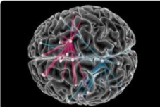
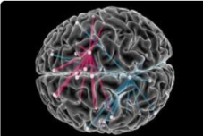
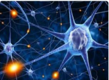
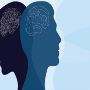

Introduction to Neuroscience
Neuroscience is a study devoted to understanding the nervous system and its core component, the brain. This investigation can occur at multiple levels, from molecular synapses and cellular networks to cognition and behavior. Because of this, methods of inquiry and research are drawn from a number of disciplines, including molecular and cellular biology, physiology, biomedicine, behavioral science, cognitive psychology, electrical engineering, computer science and artificial intelligence. Neuroscientists hope to understand how cellular circuits enable us to read and speak, how we bond with other humans, how we learn and retain information, how we experience pain, and how we feel motivation. They also hope to find causes for devastating disorders of the brain and body, as well as ways to prevent or cure them. Enormous progress has been made but we still don’t understand the full extent of how the brain works.
 

Neuroplasticity
Neuroplasticity refers to the brain's ability to reorganize and form new neural connections, particularly in response to learning or injury recovery.
- Functional Plasticity: The brain's ability to move functions from damaged areas to undamaged areas.
- Structural Plasticity: The brain's ability to physically change its structure in response to learning and experience.
- Age: Younger brains are generally more plastic than older ones.
- Experience: Learning new skills can enhance brain plasticity.
Mental Health
Mental health includes emotional, psychological, and social well-being, influencing how we think, feel, and act.
- Mental health disorders are common, affecting millions worldwide.
- Early intervention and treatment can significantly improve outcomes.
- Healthy coping mechanisms and support systems are vital for mental well-being.
Key Brain Functions
| Function | Description | Importance |
|---|---|---|
| Cognition | The mental action of acquiring knowledge and understanding. | Critical for decision-making and problem-solving. |
| Emotion Regulation | The ability to manage and respond to emotional experiences. | Essential for mental health and social interactions. |
| Memory | The process of encoding, storing, and retrieving information. | Vital for learning and adapting to new situations. |
| Motor Control | The coordination of muscle movements. | Necessary for physical activity and coordination. |
Conclusion
The human brain is a remarkable organ with incredible capabilities. Understanding its functions and the importance of mental health is crucial for personal well-being and societal progress. As we continue to explore the complexities of the brain, we can unlock new potential for treatment and enhance our quality of life.
Brain Conclusion
A Summery of brain functions and their importance